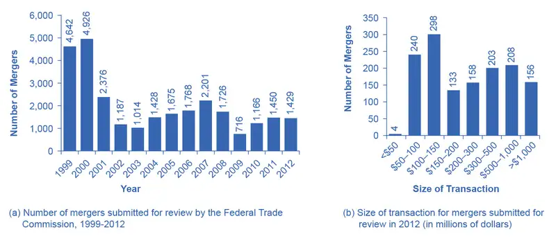
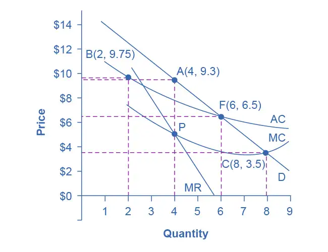
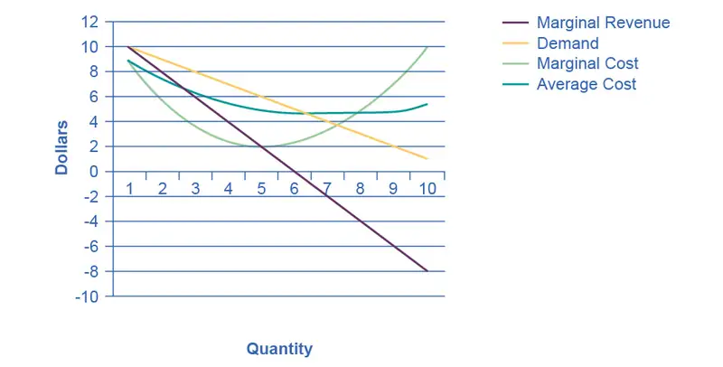

Chapter 11: Monopoly and Antitrust Policy¶
Introduction¶
Bring It Home: More than Cooking, Heating, and Cooling
If you live in the United States, there is a slightly better than 50–50 chance your home is heated and cooled using natural gas. You may even use natural gas for cooking. However, those uses are not the primary uses of natural gas in the U.S. In late 2021, according to the U.S. Energy Information Administration, home heating, cooling, and cooking accounted for nearly 20% of natural gas usage. What accounts for the rest? The greatest uses for natural gas are the generation of electric power (almost 37%) and in industry (30%). Together these three uses for natural gas touch many areas of our lives, so why would there be any opposition to a merger of two natural gas firms? After all, a merger could mean increased efficiencies and reduced costs to people like you and me.
In October 2011, Kinder Morgan and El Paso Corporation, two natural gas firms, announced they were merging. The announcement stated the combined firm would link “nearly every major production region with markets,” cut costs by “eliminating duplication in pipelines and other assets,” and that “the savings could be passed on to consumers.”
The objection? The $21.1 billion deal would give Kinder Morgan control of more than 80,000 miles of pipeline, making the new firm the third largest energy producer in North America. Policymakers and the public wondered whether the new conglomerate really would pass on cost savings to consumers, or would the merger give Kinder Morgan a strong oligopoly position in the natural gas marketplace?
That brings us to the central questions this chapter poses: What should the balance be between corporate size and a larger number of competitors in a marketplace, and what role should the government play in this balancing act?
Chapter Outline: Introduction to Monopoly and Antitrust Policy
In this chapter, you will learn about:
- Corporate Mergers
- Regulating Anticompetitive Behavior
- Regulating Natural Monopolies
- The Great Deregulation Experiment
The previous chapters on the theory of the firm identified three important lessons: First, that competition, by providing consumers with lower prices and a variety of innovative products, is a good thing; second, that large-scale production can dramatically lower average costs; and third, that markets in the real world are rarely perfectly competitive. As a consequence, government policymakers must determine how much to intervene to balance the potential benefits of large-scale production against the potential loss of competition that can occur when businesses grow in size, especially through mergers.
For example, in 2006, AT&T and BellSouth proposed a merger. At the time, there were very few mobile phone service providers. Both the Justice Department and the FCC blocked the proposal.
The two companies argued that the merger would benefit consumers, who would be able to purchase better telecommunications services at a cheaper price because the newly created firm would take advantage of economies of scale and eliminate duplicate investments. However, a number of activist groups like the Consumer Federation of America and Public Knowledge expressed fears that the merger would reduce competition and lead to higher prices for consumers for decades to come. In December 2006, the federal government allowed the merger to proceed. By 2009, the new post-merger AT&T was the eighth largest company by revenues in the United States, and by that measure the largest telecommunications company in the world. Economists have spent – and will still spend – years trying to determine whether the merger of AT&T and BellSouth, as well as other smaller mergers of telecommunications companies at about this same time, helped consumers, hurt them, or did not make much difference.
This chapter discusses public policy issues about competition. How can economists and governments determine when mergers of large companies like AT&T and BellSouth should be allowed and when they should be blocked? The government also plays a role in policing anticompetitive behavior other than mergers, like prohibiting certain kinds of contracts that might restrict competition. In the case of natural monopoly, however, trying to preserve competition probably will not work very well, and so government will often resort to regulation of price and/or quantity of output. In recent decades, there has been a global trend toward less government intervention in the price and output decisions of businesses.
11.1 Corporate Mergers¶
Learning Objectives
By the end of this section, you will be able to:
- Explain antitrust law and its significance
- Calculate concentration ratios
- Calculate the Herfindahl-Hirschman Index (HHI)
- Evaluate methods of antitrust regulation
A corporate merger occurs when two formerly separate firms combine to become a single firm. When one firm purchases another, it is called an acquisition. An acquisition may not look just like a merger, since the newly purchased firm may continue to operate under its former company name. Mergers can also be lateral, where two firms of similar sizes combine to become one. However, both mergers and acquisitions lead to two formerly separate firms operating under common ownership, and so they are commonly grouped together.
Regulations for Approving Mergers¶
Since a merger combines two firms into one, it can reduce the extent of competition between firms. Therefore, when two U.S. firms announce a merger or acquisition where at least one of the firms is above a minimum size of sales (a threshold that moves up gradually over time, and was at $101 million in 2022), or certain other conditions are met, they are required under law to notify the U.S. Federal Trade Commission (FTC). The left-hand panel of Figure 11.2 (a) shows the number of mergers submitted for review to the FTC each year from 1999 to 2012. Mergers follow the business cycle, falling after the 2001 recession, peaking in 2007 as the Great Recession struck, and then rising since 2009. The right-hand panel of Figure 11.2 (b) shows the distribution of those mergers submitted for review in 2015 as measured by the size of the transaction. It is important to remember that this total leaves out many small mergers under $50 million, which companies only need to report in certain limited circumstances. In 2012, 26 percent of all reported merger and acquisition transactions exceeded $500 million, while 11 percent exceeded $1 billion.

The laws that give government the power to block certain mergers, and even in some cases to break up large firms into smaller ones, are called antitrust laws. Before a large merger happens, the antitrust regulators at the FTC, the FCC, the U.S. Department of Justice, or other regulatory agencies can allow the merger, prohibit it, or allow it if certain conditions are met. One common condition is that the merger will be allowed if the firm agrees to sell off certain parts. For example, in 2006, Johnson & Johnson bought the Pfizer’s “consumer health” division, which included well-known brands like Listerine mouthwash and Sudafed cold medicine. As a condition of allowing the merger, Johnson & Johnson was required to sell off six brands to other firms, including Zantac® heartburn relief medication, Cortizone anti-itch cream, and Balmex diaper rash medication, to preserve a greater degree of competition in these markets.
The U.S. government approves most proposed mergers. In a market-oriented economy, firms have the freedom to make their own choices. Private firms generally have the freedom to:
- expand or reduce production
- set the price they choose
- open new factories or sales facilities or close them
- hire workers or to lay them off
- start selling new products or stop selling existing ones
If the owners want to acquire a firm or be acquired, or to merge with another firm, this decision is just one of many that firms are free to make. In these conditions, the managers of private firms will sometimes make mistakes. They may close down a factory which, it later turns out, would have been profitable. They may start selling a product that ends up losing money. A merger between two companies can sometimes lead to a clash of corporate personalities that makes both firms worse off. However, the fundamental belief behind a market-oriented economy is that firms, not governments, are in the best position to know if their actions will lead to attracting more customers or producing more efficiently.
Government regulators agree that most mergers are beneficial to consumers. As the Federal Trade Commission has noted on its website (as of November, 2013): “Most mergers actually benefit competition and consumers by allowing firms to operate more efficiently.” At the same time, the FTC recognizes, “Some [mergers] are likely to lessen competition. That, in turn, can lead to higher prices, reduced availability of goods or services, lower quality of products, and less innovation. Some mergers create a concentrated market, while others enable a single firm to raise prices.” The challenge for the antitrust regulators at the FTC and the U.S. Department of Justice is to figure out when a merger may hinder competition. This decision involves both numerical tools and some judgments that are difficult to quantify. The following Clear It Up explains the origins of U.S. antitrust law.
Clear It Up: What is U.S. antitrust law?
In the closing decades of the 1800s, many industries in the U.S. economy were dominated by a single firm that had most of the sales for the entire country. Supporters of these large firms argued that they could take advantage of economies of scale and careful planning to provide consumers with products at low prices. However, critics pointed out that when competition was reduced, these firms were free to charge more and make permanently higher profits, and that without the goading of competition, it was not clear that they were as efficient or innovative as they could be.
In many cases, these large firms were organized in the legal form of a “trust,” in which a group of formerly independent firms were consolidated by mergers and purchases, and a group of “trustees” then ran the companies as if they were a single firm. Thus, when the U.S. government sought to limit the power of these trusts, it passed the Sherman Antitrust Act in 1890 - the nation's first antitrust law. In an early demonstration of the law’s power, the U.S. Supreme Court in 1911 upheld the government’s right to break up Standard Oil, which had controlled about 90% of the country’s oil refining, into 34 independent firms, including Exxon, Mobil, Amoco, and Chevron. In 1914, the Clayton Antitrust Act outlawed mergers and acquisitions (where the outcome would be to “substantially lessen competition” in an industry), price discrimination (where different customers are charged different prices for the same product), and tied sales (where purchase of one product commits the buyer to purchase some other product). Also in 1914, the Federal Trade Commission (FTC) was created to define more specifically what competition was unfair. In 1950, the Celler-Kefauver Act extended the Clayton Act by restricting vertical and conglomerate mergers. A vertical merger occurs when two or more firms, operating at different levels within an industry's supply chain, merge operations. A conglomerate merger is a merger between firms that are involved in totally unrelated business activities. In the twenty-first century, the FTC and the U.S. Department of Justice continue to enforce antitrust laws.
The Four-Firm Concentration Ratio¶
Regulators have struggled for decades to measure the degree of monopoly power in an industry. An early tool was the concentration ratio, which measures the combined market share (or percent of total industry sales) which is accounted for by the largest firms (typically the top four to eight). For an explanation of how high market concentrations can create inefficiencies in an economy, refer to Monopoly.
Say that the market for replacing broken automobile windshields in a certain city has 18 firms with the market shares in Table 11.1, where the market share is each firm’s proportion of total sales in that market. We calculate the four-firm concentration ratio by adding the market shares of the four largest firms: in this case, 16 + 10 + 8 + 6 = 40. We do not consider this concentration ratio especially high, because the largest four firms have less than half the market.
Table 11.1 Calculating Concentration Ratios from Market Shares
| If the market shares for replacing automobile windshields are: | |
|---|---|
| Smooth as Glass Repair Company | 16% of the market |
| The Auto Glass Doctor Company | 10% of the market |
| Your Car Shield Company | 8% of the market |
| Windshields Done Right Company | 6% of the market |
| Seven firms that each have 6% of the market | 42% of the market, combined |
| Eight firms that each have 3% of the market | 24% of the market, combined |
| Then the four-firm concentration ratio is 16 + 10 + 8 + 6 = 40. | |
The concentration ratio approach can help to clarify some of the fuzziness over deciding when a merger might affect competition. For instance, if two of the smallest firms in the hypothetical market for repairing automobile windshields merged, the four-firm concentration ratio would not change—which implies that there is not much worry that the degree of competition in the market has notably diminished. However, if the top two firms merged, then the four-firm concentration ratio would become 46 (that is, 26 + 8 + 6 + 6). While this concentration ratio is modestly higher, the four-firm concentration ratio would still be less than half, so such a proposed merger might barely raise an eyebrow among antitrust regulators.
Link It Up
Visit this website to read an article about Google’s run-in with the FTC.
The Herfindahl-Hirschman Index¶
A four-firm concentration ratio is a simple tool, which may reveal only part of the story. For example, consider two industries that both have a four-firm concentration ratio of 80. However, in one industry five firms each control 20% of the market, while in the other industry, the top firm holds 77% of the market and all the other firms have 1% each. Although the four-firm concentration ratios are identical, it would be reasonable to worry more about the extent of competition in the second case—where the largest firm is nearly a monopoly—than in the first.
Another approach to measuring industry concentration that can distinguish between these two cases is called the Herfindahl-Hirschman Index (HHI). We calculate HHI by summing the squares of the market share of each firm in the industry, as the following Work It Out shows.
Work It Out: Calculating HHI
Step 1. Calculate the HHI for a monopoly with a market share of 100%. Because there is only one firm, it has 100% market share. The HHI is 1002 = 10,000.
Step 2. For an extremely competitive industry, with dozens or hundreds of extremely small competitors, the HHI value might drop as low as 100 or even less. Calculate the HHI for an industry with 100 firms that each have 1% of the market. In this case, the HHI is 100(12) = 100.
Step 3. Calculate the HHI for the industry in Table 11.1. In this case, the HHI is 162 + 102 + 82 + 7(62) + 8(32) = 744.
Step 4. Note that the HHI gives greater weight to large firms.
Step 5. Consider the earlier example, comparing one industry where five firms each have 20% of the market with an industry where one firm has 77% and the other 23 firms have 1% each. The two industries have the same four-firm concentration ratio of 80. However, the HHI for the first industry is 5(202) = 2,000, while the HHI for the second industry is much higher at 772 + 23(12) = 5,952.
Step 6. Note that the near-monopolist in the second industry drives up the HHI measure of industrial concentration.
Step 7. Review Table 11.2 which gives some examples of the four-firm concentration ratio and the HHI in various U.S. industries in 2016. (You can find market share data from multiple industry sources. Data in the table are from: Statista.com (for wireless), The Wall Street Journal (for automobiles), Gartner.com (for computers) and the U.S. Bureau of Transportation Statistics (for airlines).)
Table 11.2 Examples of Concentration Ratios and HHIs in the U.S. Economy, 2016
| U.S. Industry | Four-Firm Ratio | HHI |
|---|---|---|
| Wireless | 98 | 2,736 |
| Largest five: Verizon, AT&T, Sprint, T-Mobile, US Cellular | ||
| Personal Computers | 76 | 1,234 |
| Largest five: HP, Lenovo, Dell, Asus, Apple | ||
| Airlines | 69 | 1,382 |
| Largest five: American, Southwest, Delta, United, JetBlue | ||
| Automobiles | 58 | 1,099 |
| Largest five: Ford, GM, Toyota, Chrysler, Nissan |
In the 1980s, the FTC followed these guidelines: If a merger would result in an HHI of less than 1,000, the FTC would probably approve it. If a merger would result in an HHI of more than 1,800, the FTC would probably challenge it. If a merger would result in an HHI between 1,000 and 1,800, then the FTC would scrutinize the plan and make a case-by-case decision. However, in the last several decades, the antitrust enforcement authorities have moved away from relying as heavily on measures of concentration ratios and HHIs to determine whether they will allow a merger, and instead they carry out more case-by-case analysis on the extent of competition in different industries.
New Directions for Antitrust¶
Both the four-firm concentration ratio and the Herfindahl-Hirschman index share some weaknesses. First, they begin from the assumption that the “market” under discussion is well-defined, and the only question is measuring how sales are divided in that market. Second, they are based on an implicit assumption that competitive conditions across industries are similar enough that a broad measure of concentration in the market is enough to make a decision about the effects of a merger. These assumptions, however, are not always correct. In response to these two problems, the antitrust regulators have been changing their approach in the last decade or two.
Defining a market is often controversial. For example, Microsoft in the early 2000s had a dominant share of the software for computer operating systems. However, in the total market for all computer software and services, including everything from games to scientific programs, the Microsoft share was only about 14% in 2014. A narrowly defined market will tend to make concentration appear higher, while a broadly defined market will tend to make it appear smaller.
In recent decades, there have been two especially important shifts affecting how we define markets: one centers on technology and the other centers on globalization. In addition, these two shifts are interconnected. With the vast improvement in communications technologies, including the development of the internet, a consumer can order books or pet supplies from all over the country or the world. As a result, the degree of competition many local retail businesses face has increased. The same effect may operate even more strongly in markets for business supplies, where so-called “business-to-business” websites can allow buyers and suppliers from anywhere in the world to find each other.
Globalization has changed the market boundaries. As recently as the 1970s, it was common for measurements of concentration ratios and HHIs to stop at national borders. Now, many industries find that their competition comes from the global market. A few decades ago, three companies, General Motors, Ford, and Chrysler, dominated the U.S. auto market. By 2014, however, production of these three firms accounted for less than half of U.S. auto sales, although by 2021, with the emergence of COVID-19, the three firms accounted for essentially half of U.S. auto sales. The three firms face competition from well-known car manufacturers such as Toyota, Honda, Nissan, Volkswagen, Mitsubishi, and Mazda. When analysts calculate HHIs with a global perspective, concentration in most major industries—including cars—is lower than in a purely domestic context.
Because attempting to define a particular market can be difficult and controversial, the Federal Trade Commission has begun to look less at market share and more at the data on actual competition between businesses. For example, in February 2007, Whole Foods Market and Wild Oats Market announced that they wished to merge. These were the two largest companies in the market that the government defined as “premium natural and organic supermarket chains.” However, one could also argue that they were two relatively small companies in the broader market for all stores that sell groceries or specialty food products.
Rather than relying on a market definition, the government antitrust regulators looked at detailed evidence on profits and prices for specific stores in different cities, both before and after other competitive stores entered or exited. Based on that evidence, the Federal Trade Commission decided to block the merger. After two years of legal battles, the FTC eventually allowed the merger in 2009 under the conditions that Whole Foods sell off the Wild Oats brand name and a number of individual stores, to preserve competition in certain local markets. For more on the difficulties of defining markets, refer to Monopoly.
This new approach to antitrust regulation involves detailed analysis of specific markets and companies, instead of defining a market and counting up total sales. A common starting point is for antitrust regulators to use statistical tools and real-world evidence to estimate the demand curves and supply curves the firms proposing a merger face. A second step is to specify how competition occurs in this specific industry. Some possibilities include competing to cut prices, to raise output, to build a brand name through advertising, and to build a reputation for good service or high quality. With these pieces of the puzzle in place, it is then possible to build a statistical model that estimates the likely outcome for consumers if the two firms are allowed to merge. These models do require some degree of subjective judgment, and so they can become the subject of legal disputes between the antitrust authorities and the companies that wish to merge.
11.2 Regulating Anticompetitive Behavior¶
Learning Objectives
By the end of this section, you will be able to:
- Analyze restrictive practices
- Explain tying sales, bundling, and predatory pricing
- Evaluate a real-world situation of possible anticompetitive and restrictive practices
The U.S. antitrust laws reach beyond blocking mergers that would reduce competition to include a wide array of anticompetitive practices. For example, it is illegal for competitors to form a cartel to collude to make pricing and output decisions, as if they were a monopoly firm. The Federal Trade Commission and the U.S. Department of Justice prohibit firms from agreeing to fix prices or output, rigging bids, or sharing or dividing markets by allocating customers, suppliers, territories, or lines of commerce.
In the late 1990s, for example, the antitrust regulators prosecuted an international cartel of vitamin manufacturers, including the Swiss firm Hoffman-La Roche, the German firm BASF, and the French firm Rhone-Poulenc. These firms reached agreements on how much to produce, how much to charge, and which firm would sell to which customers. Firms like General Mills, Kellogg, Purina Mills, and Proctor and Gamble bought the high-priced vitamins, which pushed up the prices more. Hoffman-La Roche pleaded guilty in May 1999 and agreed both to pay a fine of $500 million and to have at least one top executive be incarcerated for four months.
Under U.S. antitrust laws, monopoly itself is not illegal. If a firm has a monopoly because of a newly patented invention, for example, the law explicitly allows a firm to earn higher-than-normal profits for a time as a reward for innovation. If a firm achieves a large share of the market by producing a better product at a lower price, such behavior is not prohibited by antitrust law.
Restrictive Practices¶
Antitrust law includes rules against restrictive practices—practices that do not involve outright agreements to raise price or to reduce the quantity produced, but that might have the effect of reducing competition. Antitrust cases involving restrictive practices are often controversial, because they delve into specific contracts or agreements between firms that are allowed in some cases but not in others.
For example, an exclusive dealing agreement between a manufacturer and a dealer can be legal or illegal. It is legal if the purpose of the contract is to encourage competition between dealers. For example, it is legal for the Ford Motor Company to sell its cars to only Ford dealers, and for General Motors to sell to only GM dealers, and so on. However, exclusive deals may also limit competition. If one large retailer obtained the exclusive rights to be the sole distributor of televisions, computers, and audio equipment made by a number of companies, then this exclusive contract would have an anticompetitive effect on other retailers.
Tying sales happen when a customer is allowed to buy one product only if the customer also buys a second product. Tying sales are controversial because they force consumers to purchase a product that they may not actually want or need. Further, the additional, required products are not necessarily advantageous to the customer. Suppose that to purchase a popular DVD, the store required that you also purchase a certain portable TV model. These products are only loosely related, thus there is no reason to make the purchase of one contingent on the other. Even if a customer were interested in a portable TV, the tying to a particular model prevents the customer from having the option of selecting one from the numerous types available in the market.
A related, but not identical, concept is bundling, where a firm sells two or more products as one. Bundling typically offers an advantage for consumers by allowing them to acquire multiple products or services for a better price. For example, several cable companies allow customers to buy products like cable, internet, and a phone line through a special price available through bundling. Customers are also welcome to purchase these products separately, but the price of bundling is usually more appealing.
In some cases, we can view tying sales and bundling as anticompetitive. However, in other cases they may be legal and even common. It is common for people to purchase season tickets to a sports team or a set of concerts so as to guarantee tickets to the few contests or shows that are most popular and likely to sell out. Computer software manufacturers may often bundle a number of different programs, even when the buyer wants only a few. Think about the software that is included in a new computer purchase, for example.
Recall from the chapter on Monopoly that predatory pricing occurs when the existing firm (or firms) reacts to a new firm by dropping prices very low, until the new firm is driven out of the market, at which point the existing firm raises prices again. This pattern of pricing is aimed at deterring new firms from entering the market. However, in practice, it can be hard to figure out when pricing is predatory. Say that American Airlines is flying between two cities, and a new airline starts flying between the same two cities, at a lower price. If American Airlines cuts its price to match the new entrant, is this predatory pricing or is it just market competition at work? A commonly proposed rule is that if a firm is selling for less than its average variable cost—that is, at a price where it should be shutting down—then there is evidence for predatory pricing. However, calculating in the real world what costs are variable and what costs are fixed is often not obvious, either.
The Microsoft antitrust case embodies many of these gray areas in restrictive practices, as the next Clear It Up shows.
Clear It Up: Did Microsoft® engage in anticompetitive and restrictive practices?
The most famous restrictive practices case of recent years was a series of lawsuits by the U.S. government against Microsoft—lawsuits that some of Microsoft’s competitors encouraged. All sides admitted that Microsoft’s Windows program had a near-monopoly position in the market for the software used in general computer operating systems. All sides agreed that the software had many satisfied customers and that the computer software capabilities were compatible with Windows. Software that Microsoft and other companies produced had expanded dramatically in the 1990s. Having a monopoly or a near-monopoly is not necessarily illegal in and of itself, but in cases where one company controls a great deal of the market, antitrust regulators look at any allegations of restrictive practices with special care.
The antitrust regulators argued that Microsoft had gone beyond profiting from its software innovations and its dominant position in the software market for operating systems, and had tried to use its market power in operating systems software to take over other parts of the software industry. For example, the government argued that Microsoft had engaged in an anticompetitive form of exclusive dealing by threatening computer makers that, if they did not leave another firm’s software off their machines (specifically, Netscape’s Internet browser), then Microsoft would not sell them its operating system software. Government antitrust regulators accused Microsoft of tying together its Windows operating system software, where it had a monopoly, with its Internet Explorer browser software, where it did not have a monopoly, and thus using this bundling as an anticompetitive tool. The government also accused Microsoft of a form of predatory pricing; namely, giving away certain additional software products for free as part of Windows, as a way of driving out the competition from other software makers.
In April 2000, a federal court held that Microsoft’s behavior had crossed the line into unfair competition, and recommended that the company be split into two competing firms. However, the court overturned that penalty on appeal, and in November 2002 Microsoft reached a settlement with the government that it would end its restrictive practices.
The concept of restrictive practices is continually evolving, as firms seek new ways to earn profits and government regulators define what is permissible. A situation where the law is evolving and changing is always somewhat troublesome, since laws are most useful and fair when firms know what they are in advance. In addition, since the law is open to interpretation, competitors who are losing out in the market can accuse successful firms of anticompetitive restrictive practices, and try to win through government regulation what they have failed to accomplish in the market. Officials at the Federal Trade Commission and the Department of Justice are, of course, aware of these issues, but there is no easy way to resolve them.
11.3 Regulating Natural Monopolies¶
Learning Objectives
By the end of this section, you will be able to:
- Evaluate the appropriate competition policy for a natural monopoly
- Interpret a graph of regulatory choices
- Contrast cost-plus and price cap regulation
Most true monopolies today in the U.S. are regulated, natural monopolies. A natural monopoly poses a difficult challenge for competition policy, because the structure of costs and demand makes competition unlikely or costly. A natural monopoly arises when average costs are declining over the range of production that satisfies market demand. This typically happens when fixed costs are large relative to variable costs. As a result, one firm is able to supply the total quantity demanded in the market at lower cost than two or more firms—so splitting up the natural monopoly would raise the average cost of production and force customers to pay more.
Public utilities, the companies that have traditionally provided water and electrical service across much of the United States, are leading examples of natural monopoly. It would make little sense to argue that a local water company should be divided into several competing companies, each with its own separate set of pipes and water supplies. Installing four or five identical sets of pipes under a city, one for each water company, so that each household could choose its own water provider, would be terribly costly. The same argument applies to the idea of having many competing companies for delivering electricity to homes, each with its own set of wires. Before the advent of wireless phones, the argument also applied to the idea of many different phone companies, each with its own set of phone wires running through the neighborhood.
The Choices in Regulating a Natural Monopoly¶
What then is the appropriate competition policy for a natural monopoly? Figure 11.3 illustrates the case of natural monopoly, with a market demand curve that cuts through the downward-sloping portion of the average cost curve. Points A, B, C, and F illustrate four of the main choices for regulation. Table 11.3 outlines the regulatory choices for dealing with a natural monopoly.

Table 11.3 Regulatory Choices in Dealing with Natural Monopoly (*We obtain total revenue by multiplying price and quantity. However, we have rounded some of the price values in this table for ease of presentation.)
| Quantity | Price | Total Revenue* | Marginal Revenue | Total Cost | Marginal Cost | Average Cost |
|---|---|---|---|---|---|---|
| 1 | 14.7 | 14.7 | 14.7 | 11.0 | - | 11.00 |
| 2 | 12.4 | 24.7 | 10.0 | 19.5 | 8.5 | 9.75 |
| 3 | 10.6 | 31.7 | 7.0 | 25.5 | 6.0 | 8.50 |
| 4 | 9.3 | 37.2 | 5.5 | 31.0 | 5.5 | 7.75 |
| 5 | 8.0 | 40.0 | 2.8 | 35.0 | 4.0 | 7.00 |
| 6 | 6.5 | 39.0 | –1.0 | 39.0 | 4.0 | 6.50 |
| 7 | 5.0 | 35.0 | –4.0 | 42.0 | 3.0 | 6.00 |
| 8 | 3.5 | 28.0 | –7.0 | 45.5 | 3.5 | 5.70 |
| 9 | 2.0 | 18.0 | –10.0 | 49.5 | 4.0 | 5.5 |
The first possibility is to leave the natural monopoly alone. In this case, the monopoly will follow its normal approach to maximizing profits. It determines the quantity where MR = MC, which happens at point P at a quantity of 4. The firm then looks to point A on the demand curve to find that it can charge a price of 9.3 for that profit-maximizing quantity. Since the price is above the average cost curve, the natural monopoly would earn economic profits.
While unlikely, a second outcome may arise if antitrust authorities decide to divide the company, so that the new firms can compete. As a simple example, imagine that the company is cut in half. Thus, instead of one large firm producing a quantity of 4, two half-size firms each produce a quantity of 2. Because of the declining average cost curve (AC), the average cost of production for each of the half-size companies producing 2, as point B shows, would be 9.75, while the average cost of production for a larger firm producing 4 would only be 7.75. Thus, the economy would become less productively efficient, since the good is produced at a higher average cost. In a situation with a downward-sloping average cost curve, two smaller firms will always have higher average costs of production than one larger firm for any quantity of total output. In addition, the antitrust authorities must worry that splitting the natural monopoly into pieces may be only the start of their problems. If one of the two firms grows larger than the other, it will have lower average costs and may be able to drive its competitor out of the market. Alternatively, two firms in a market may discover subtle ways of coordinating their behavior and keeping prices high. Either way, the result will not be the greater competition that was desired.
A third alternative is that regulators may decide to set prices and quantities produced for this industry. The regulators will try to choose a point along the market demand curve that benefits both consumers and the broader social interest. Point C illustrates one tempting choice: the regulator requires that the firm produce the quantity of output where marginal cost crosses the demand curve at an output of 8, and charge the price of 3.5, which is equal to marginal cost at that point. This rule is appealing because it requires price to be set equal to marginal cost, which is what would occur in a perfectly competitive market, and it would assure consumers a higher quantity and lower price than at the monopoly choice A. In fact, efficient allocation of resources would occur at point C, since the value to the consumers of the last unit bought and sold in this market is equal to the marginal cost of producing it.
Attempting to bring about point C through force of regulation, however, runs into a severe difficulty. At point C, with an output of 8, a price of 3.5 is below the average cost of production, which is 5.7, so if the firm charges a price of 3.5, it will be suffering losses. Unless the regulators or the government offer the firm an ongoing public subsidy (and there are numerous political problems with that option), the firm will lose money and go out of business.
Perhaps the most plausible option for the regulator is point F; that is, to set the price where AC crosses the demand curve at an output of 6 and a price of 6.5. This plan makes some sense at an intuitive level: let the natural monopoly charge enough to cover its average costs and earn a normal rate of profit, so that it can continue operating, but prevent the firm from raising prices and earning abnormally high monopoly profits, as it would at the monopoly choice A. Determining this level of output and price with the political pressures, time constraints, and limited information of the real world is much harder than identifying the point on a graph. For more on the problems that can arise from a centrally determined price, see the discussion of price floors and price ceilings in Demand and Supply.
Cost-Plus versus Price Cap Regulation¶
Regulators of public utilities for many decades followed the general approach of attempting to choose a point like F in Figure 11.3. They calculated the average cost of production for the water or electricity companies, added in an amount for the normal rate of profit the firm should expect to earn, and set the price for consumers accordingly. This method was known as cost-plus regulation.
Cost-plus regulation raises difficulties of its own. If producers receive reimbursement for their costs, plus a bit more, then at a minimum, producers have less reason to be concerned with high costs—because they can just pass them along in higher prices. Worse, firms under cost-plus regulation even have an incentive to generate high costs by building huge factories or employing many staff, because what they can charge is linked to the costs they incur.
Thus, in the 1980s and 1990s, some public utility regulators began to use price cap regulation, where the regulator sets a price that the firm can charge over the next few years. A common pattern was to require a price that declined slightly over time. If the firm can find ways of reducing its costs more quickly than the price caps, it can make a high level of profits. However, if the firm cannot keep up with the price caps or suffers bad luck in the market, it may suffer losses. A few years down the road, the regulators will then set a new series of price caps based on the firm’s performance.
Price cap regulation requires delicacy. It will not work if the price regulators set the price cap unrealistically low. It may not work if the market changes dramatically so that the firm is doomed to incurring losses no matter what it does—say, if energy prices rise dramatically on world markets, then the company selling natural gas or heating oil to homes may not be able to meet price caps that seemed reasonable a year or two ago. However, if the regulators compare the prices with producers of the same good in other areas, they can, in effect, pressure a natural monopoly in one area to compete with the prices charged in other areas. Moreover, the possibility of earning greater profits or experiencing losses—instead of having an average rate of profit locked in every year by cost-plus regulation—can provide the natural monopoly with incentives for efficiency and innovation.
With natural monopoly, market competition is unlikely to take root, so if consumers are not to suffer the high prices and restricted output of an unrestricted monopoly, government regulation will need to play a role. In attempting to design a system of price cap regulation with flexibility and incentive, government regulators do not have an easy task.
11.4 The Great Deregulation Experiment¶
Learning Objectives
By the end of this section, you will be able to:
- Evaluate the effectiveness of price regulation and antitrust policy
- Explain regulatory capture and its significance
Governments at all levels across the United States have regulated prices in a wide range of industries. In some cases, like water and electricity that have natural monopoly characteristics, there is some room in economic theory for such regulation. However, once politicians are given a basis to intervene in markets and to choose prices and quantities, it is hard to know where to stop.
Doubts about Regulation of Prices and Quantities¶
Beginning in the 1970s, it became clear to policymakers of all political leanings that the existing price regulation was not working well. The United States carried out a great policy experiment—the deregulation that we discussed in Monopoly—removing government controls over prices and quantities produced in airlines, railroads, trucking, intercity bus travel, natural gas, and bank interest rates. The Clear It Up discusses the outcome of deregulation in one industry in particular—airlines.
Clear It Up: What are the results of airline deregulation?
Why did the pendulum swing in favor of deregulation? Consider the airline industry. In the early days of air travel, no airline could make a profit just by flying passengers. Airlines needed something else to carry and the Postal Service provided that something with airmail. Thus, the first U.S. government regulation of the airline industry happened through the Postal Service, when in 1926 the Postmaster General began giving airlines permission to fly certain routes based on mail delivery needs—and the airlines took some passengers along for the ride. In 1934, the antitrust authorities charged the Postmaster General with colluding with the major airlines of that day to monopolize the nation’s airways. In 1938, the U.S. government created the Civil Aeronautics Board (CAB) to regulate airfares and routes instead. For 40 years, from 1938 to 1978, the CAB approved all fares, controlled all entry and exit, and specified which airlines could fly which routes. There was zero entry of new airlines on the main routes across the country for 40 years, because the CAB did not think it was necessary.
In 1978, the Airline Deregulation Act took the government out of the business of determining airfares and schedules. The new law shook up the industry. Famous old airlines like Pan American, Eastern, and Braniff went bankrupt and disappeared. Some new airlines like People Express were created—and then vanished.
The greater competition from deregulation reduced airfares by about one-third over the next two decades, saving consumers billions of dollars a year. The average flight used to take off with just half its seats full; now it is two-thirds full, which is far more efficient. Airlines have also developed hub-and-spoke systems, where planes all fly into a central hub city at a certain time and then depart. As a result, one can fly between any of the spoke cities with just one connection—and there is greater service to more cities than before deregulation. With lower fares and more service, the number of air passengers doubled from the late 1970s to the start of the 2000s—an increase that, in turn, doubled the number of jobs in the airline industry. Meanwhile, with the watchful oversight of government safety inspectors, commercial air travel has continued to get safer over time.
The U.S. airline industry is far from perfect. For example, a string of mergers in recent years has raised concerns over how competition might be compromised.
One difficulty with government price regulation is what economists call regulatory capture, in which the firms that are supposedly regulated end up playing a large role in setting the regulations that they will follow. When the airline industry was regulated, for example, it suggested appointees to the regulatory board, sent lobbyists to argue with the board, provided most of the information on which the board made decisions, and offered well-paid jobs to at least some of the people leaving the board. In this situation, it is easy for regulators to poorly represent consumers. The result of regulatory capture is that government price regulation can often become a way for existing competitors to work together to reduce output, keep prices high, and limit competition.
The Effects of Deregulation¶
Deregulation, both of airlines and of other industries, has its negatives. The greater pressure of competition led to entry and exit. When firms went bankrupt or contracted substantially in size, they laid off workers who had to find other jobs. Market competition is, after all, a full-contact sport.
A number of major accounting scandals involving prominent corporations such as Enron, Tyco International, and WorldCom led to the Sarbanes-Oxley Act in 2002. The government designed Sarbanes-Oxley to increase confidence in financial information provided by public corporations to protect investors from accounting fraud.
The Great Recession, which began in late 2007, was caused at least in part by a global financial crisis, which began in the United States. The key component of the crisis was the creation and subsequent failure of several types of unregulated financial assets, such as collateralized mortgage obligations (CMOs, a type of mortgage-backed security), and credit default swaps (CDSs, insurance contracts on assets like CMOs that provided a payoff even if the holder of the CDS did not own the CMO). Private credit rating agencies such as Standard & Poors, Moody’s, and Fitch rated many of these assets very safe.
The collapse of the markets for these assets precipitated the financial crisis and led to the failure of Lehman Brothers, a major investment bank, numerous large commercial banks, such as Wachovia, and even the Federal National Mortgage Corporation (Fannie Mae), which had to be nationalized—that is, taken over by the federal government. One response to the financial crisis was the Dodd-Frank Act, which majorly attempted to reform the financial system. The legislation’s purpose, as noted on dodd-frank.com is:
To promote the financial stability of the United States by improving accountability and transparency in the financial system, to end “too big to fail,” to protect the American taxpayer by ending bailouts, [and] to protect consumers from abusive financial services practices. . .
All market-based economies operate against a background of laws and regulations, including laws about enforcing contracts, collecting taxes, and protecting health and the environment. The government policies that we discussed in this chapter—like blocking certain anticompetitive mergers, ending restrictive practices, imposing price cap regulation on natural monopolies, and deregulation—demonstrate the role of government to strengthen the incentives that come with a greater degree of competition.
Bring It Home: More than Cooking, Heating, and Cooling
What did the Federal Trade Commission (FTC) decide on the Kinder Morgan / El Paso Corporation merger? After careful examination, federal officials decided there was only one area of significant overlap that might provide the merged firm with strong market power. The FTC approved the merger, provided Kinder Morgan divest itself of the overlap area. Tallgrass purchased Kinder Morgan Interstate Gas Transmission, Trailblazer Pipeline Co. LLC, two processing facilities in Wyoming, and Kinder Morgan’s 50 percent interest in the Rockies Express Pipeline to meet the FTC requirements. The FTC was attempting to strike a balance between potential cost reductions resulting from economies of scale and concentration of market power.
Did the price of natural gas decrease? Yes, rather significantly. In 2010, the wellhead price of natural gas was $4.48 per thousand cubic foot. In 2012 the price had fallen to just $2.66. Was the merger responsible for the large drop in price? The answer is uncertain. The larger contributor to the sharp drop in price was the overall increase in the supply of natural gas. Increasingly, more natural gas was able to be recovered by fracturing shale deposits, a process called fracking. Fracking, which is controversial for environmental reasons, enabled the recovery of known reserves of natural gas that previously were not economically feasible to tap. Kinder Morgan’s control of 80,000-plus miles of pipeline likely made moving the gas from wellheads to end users smoother and allowed for an even greater benefit from the increased supply.
Chapter Review¶
Key Terms¶
- acquisition
- when one firm purchases another
- antitrust laws
- laws that give government the power to block certain mergers, and even in some cases to break up large firms into smaller ones
- bundling
- a situation in which multiple products are sold as one
- concentration ratio
- an early tool to measure the degree of monopoly power in an industry; measures what share of the total sales in the industry are accounted for by the largest firms, typically the top four to eight firms
- cost-plus regulation
- when regulators permit a regulated firm to cover its costs and to make a normal level of profit
- exclusive dealing
- an agreement that a dealer will sell only products from one manufacturer
- four-firm concentration ratio
- the percentage of the total sales in the industry that are accounted for by the largest four firms
- Herfindahl-Hirschman Index (HHI)
- approach to measuring market concentration by adding the square of the market share of each firm in the industry
- market share
- the percentage of total sales in the market
- merger
- when two formerly separate firms combine to become a single firm
- price cap regulation
- when the regulator sets a price that a firm cannot exceed over the next few years
- regulatory capture
- when the supposedly regulated firms end up playing a large role in setting the regulations that they will follow and as a result, they “capture” the people usually through the promise of a job in that “regulated” industry once their term in government has ended
- restrictive practices
- practices that reduce competition but that do not involve outright agreements between firms to raise prices or to reduce the quantity produced
- tying sales
- a situation where a customer is allowed to buy one product only if the customer also buys another product
Key Concepts and Summary¶
11.1 Corporate Mergers¶
A corporate merger involves two private firms joining together. An acquisition refers to one firm buying another firm. In either case, two formerly independent firms become one firm. Antitrust laws seek to ensure active competition in markets, sometimes by preventing large firms from forming through mergers and acquisitions, sometimes by regulating business practices that might restrict competition, and sometimes by breaking up large firms into smaller competitors.
A four-firm concentration ratio is one way of measuring the extent of competition in a market. We calculate it by adding the market shares—that is, the percentage of total sales—of the four largest firms in the market. A Herfindahl-Hirschman Index (HHI) is another way of measuring the extent of competition in a market. We calculate it by taking the market shares of all firms in the market, squaring them, and then summing the total.
The forces of globalization and new communications and information technology have increased the level of competition that many firms face by increasing the amount of competition from other regions and countries.
11.2 Regulating Anticompetitive Behavior¶
Antitrust authorities block firms from openly colluding to form a cartel that will reduce output and raise prices. Companies sometimes attempt to find other ways around these restrictions and, consequently, many antitrust cases involve restrictive practices that can reduce competition in certain circumstances, like tie-in sales, bundling, and predatory pricing.
11.3 Regulating Natural Monopolies¶
In the case of a natural monopoly, market competition will not work well and so, rather than allowing an unregulated monopoly to raise price and reduce output, the government may wish to regulate price and/or output. Common examples of regulation are public utilities, the regulated firms that often provide electricity and water service.
Cost-plus regulation refers to government regulating a firm which sets the price that a firm can charge over a period of time by looking at the firm’s accounting costs and then adding a normal rate of profit. Price cap regulation refers to government regulation of a firm where the government sets a price level several years in advance. In this case, the firm can either earn high profits if it manages to produce at lower costs or sell a higher quantity than expected or suffer low profits or losses if costs are high or it sells less than expected.
11.4 The Great Deregulation Experiment¶
The U.S. economy experienced a wave of deregulation in the late 1970s and early 1980s, when the government eliminated a number of regulations that had set prices and quantities produced in a number of industries. Major accounting scandals in the early 2000s and, more recently, the Great Recession have spurred new regulation to prevent similar occurrences in the future. Regulatory capture occurs when the regulated industries end up having a strong influence over what regulations exist.
Self-Check Questions¶
11.1 Corporate Mergers¶
1. Is it true that a merger between two firms that are not already in the top four by size can affect both the four-firm concentration ratio and the Herfindahl-Hirschman Index? Explain briefly.
Answer
Yes, it is true. The HHI example is easy enough: since the market shares of all firms are included in the HHI calculation, a merger between two of the firms will change the HHI. For the four-firm concentration ratio, it is quite possible that a merger between, say, the fifth and sixth largest firms in the market could create a new firm that is then ranked in the top four in the market. In this case, a merger of two firms, neither in the top four, would still change the four-firm concentration ratio.
2. Is it true that the four-firm concentration ratio puts more emphasis on one or two very large firms, while the Herfindahl-Hirschman Index puts more emphasis on all the firms in the entire market? Explain briefly.
Answer
No, it is not true. The HHI includes the market shares of all firms in its calculation, but the squaring of the market shares has the effect of making the impact of the largest firms relatively bigger than in the 4-firm or 8-firm ratio.
3. Some years ago, two intercity bus companies, Greyhound Lines, Inc. and Trailways Transportation System, wanted to merge. One possible definition of the market in this case was “the market for intercity bus service.” Another possible definition was “the market for intercity transportation, including personal cars, car rentals, passenger trains, and commuter air flights.” Which definition do you think the bus companies preferred, and why?
Answer
The bus companies wanted the broader market definition (i.e., the second definition). If the narrow definition had been used, the combined bus companies would have had a near-monopoly on the market for intercity bus service. But they had only a sliver of the market for intercity transportation when everything else was included. The merger was allowed.
4. As a result of globalization and new information and communications technology, would you expect that the definitions of markets that antitrust authorities use will become broader or narrower?
Answer
The common expectation is that the definition of markets will become broader because of greater competition from faraway places. However, this broadening doesn’t necessarily mean that antitrust authorities can relax. There is also a fear that companies with a local or national monopoly may use the new opportunities to extend their reach across national borders, and that it will be difficult for national authorities to respond.
11.2 Regulating Anticompetitive Behavior¶
5. Why would a firm choose to use one or more of the anticompetitive practices described in Regulating Anticompetitive Behavior?
Answer
Because outright collusion to raise profits is illegal and because existing regulations include gray areas which firms may be able to exploit.
11.3 Regulating Natural Monopolies¶
6. Urban transit systems, especially those with rail systems, typically experience significant economies of scale in operation. Consider the transit system data in Table 11.4. Note that the quantity is in millions of riders.
Table 11.4
| Demand: | Quantity | 1 | 2 | 3 | 4 | 5 | 6 | 7 | 8 | 9 | 10 |
| Price | 10 | 9 | 8 | 7 | 6 | 5 | 4 | 3 | 2 | 1 | |
| Marginal Revenue | 10 | 8 | 6 | 4 | 2 | 0 | –2 | –4 | –6 | –8 | |
| Costs: | Marginal Cost | 9 | 6 | 5 | 3 | 2 | 3 | 4 | 5 | 7 | 10 |
| Average Cost | 9 | 7.5 | 6.7 | 5.8 | 5 | 4.7 | 4.6 | 4.6 | 4.9 | 5.4 |
Draw the demand, marginal revenue, marginal cost, and average cost curves. Do they have the normal shapes?
Answer
Yes, all curves have normal shapes.

7. From the graph you drew to answer Exercise 6, would you say this transit system is a natural monopoly? Justify.
Answer
Yes it is a natural monopoly because average costs decline over the range that satisfies the market demand. For example, at the point where the demand curve and the average cost curve meet, there are economies of scale.
11.4 The Great Deregulation Experiment¶
Use the following information to answer the next three questions. In the years before wireless phones, when telephone technology required having a wire running to every home, it seemed plausible that telephone service had diminishing average costs and might require regulation like a natural monopoly. For most of the twentieth century, the national U.S. phone company was AT&T, and the company functioned as a regulated monopoly. Think about the deregulation of the U.S. telecommunications industry that has occurred over the last few decades. (This is not a research assignment, but a thought assignment based on what you have learned in this chapter.)
8. What real-world changes made the deregulation possible?
Answer
Improvements in technology that allowed phone calls to be made via microwave transmission, communications satellites, and other wireless technologies.
9. What are some of the benefits of the deregulation?
Answer
More consumer choice. Cheaper phone calls, especially long distance. Better-quality phone service in many cases. Cheaper, faster, and better-quality data transmission. Spin-off technologies like free Internet-based calling and video calling.
10. What might some of the negatives of deregulation be?
Answer
More choice can sometimes make for difficult decisions—not knowing if you got the best plan for your situation, for example. Some phone service providers are less reliable than AT&T used to be.
Review Questions¶
11.1 Corporate Mergers¶
11. What is a corporate merger? What is an acquisition?
12. What is the goal of antitrust policies?
13. How do we measure a four-firm concentration ratio? What does a high measure mean about the extent of competition?
14. How do we measure a Herfindahl-Hirschman Index? What does a low measure mean about the extent of competition?
15. Why can it be difficult to decide what a “market” is for purposes of measuring competition?
11.2 Regulating Anticompetitive Behavior¶
16. What is a minimum resale price maintenance agreement? How might it reduce competition and when might it be acceptable?
17. What is exclusive dealing? How might it reduce competition and when might it be acceptable?
18. What is a tie-in sale? How might it reduce competition and when might it be acceptable?
19. What is predatory pricing? How might it reduce competition, and why might it be difficult to tell when it should be illegal?
11.3 Regulating Natural Monopolies¶
20. If public utilities are a natural monopoly, what would be the danger in deregulating them?
21. If public utilities are a natural monopoly, what would be the danger in splitting them into a number of separate competing firms?
22. What is cost-plus regulation?
23. What is price cap regulation?
11.4 The Great Deregulation Experiment¶
24. What is deregulation? Name some industries that have been deregulated in the United States.
25. What is regulatory capture?
26. Why does regulatory capture reduce the persuasiveness of the case for regulating industries for the benefit of consumers?
Critical Thinking Questions¶
11.1 Corporate Mergers¶
27. Does either the four-firm concentration ratio or the HHI directly measure the amount of competition in an industry? Why or why not?
28. What would be evidence of serious competition between firms in an industry? Can you identify two highly competitive industries?
11.2 Regulating Anticompetitive Behavior¶
29. Can you think of any examples of successful predatory pricing in the real world?
30. If you were developing a product (like a web browser) for a market with significant barriers to entry, how would you try to get your product into the market successfully?
11.3 Regulating Natural Monopolies¶
31. In the middle of the twentieth century, major U.S. cities had multiple competing city bus companies. Today, there is usually only one and it runs as a subsidized, regulated monopoly. What do you suppose caused the change?
32. Why are urban areas willing to subsidize urban transit systems? Does the argument for subsidies make sense to you?
11.4 The Great Deregulation Experiment¶
33. Deregulation, like all changes in government policy, always has pluses and minuses. What do you think some of the minuses might be for airline deregulation?
34. Do you think it is possible for government to outlaw everything that businesses could do wrong? If so, why does government not do that? If not, how can regulation stay ahead of rogue businesses that push the limits of the system until it breaks?
Problems¶
11.1 Corporate Mergers¶
35. Use Table 11.5 to calculate the four-firm concentration ratio for the U.S. auto market. Does this indicate a concentrated market or not?
Table 11.5 Global Auto Manufacturers with Top Four U.S. Market Share, June 2013 (Source: http://www.zacks.com/commentary/27690/auto-industry-stock-outlook-june-2013)
| GM | 19% |
| Ford | 17% |
| Toyota | 14% |
| Chrysler | 11% |
36. Use Table 11.5 and Table 11.6 to calculate the Herfindahl-Hirschman Index for the U.S. auto market. Would the FTC approve a merger between GM and Ford?
Table 11.6 Global Auto Manufacturers with additional U.S. Market Share, June 2013 (Source: http://www.zacks.com/commentary/27690/auto-industry-stock-outlook-june-2013)
| Honda | 10% |
| Nissan | 7% |
| Hyundai | 5% |
| Kia | 4% |
| Subaru | 3% |
| Volkswagen | 3% |
11.3 Regulating Natural Monopolies¶
Use Table 11.4 to answer the following questions.
37. If the transit system were allowed to operate as an unregulated monopoly, what output would it supply and what price would it charge?
38. If the transit system were regulated to operate with no subsidy (i.e., at zero economic profit), what approximate output would it supply and what approximate price would it charge?
39. If the transit system were regulated to provide the most allocatively efficient quantity of output, what output would it supply and what price would it charge? What subsidy would be necessary to ensure this efficient provision of transit services?
References¶
References
Bishop, Todd. 2014. “Microsoft Exec Admits New Reality: Market Share No Longer 90% — It’s 14%.”GeekWire. Accessed March 27, 2015. http://www.geekwire.com/2014/microsoft-exec-admits-new-reality-market-share-longer-90-14/.
Catan, T., & Dezember, R. “Kinder-El Paso Merger to Face Antitrust Scrutiny,” Wall Street Journal. October 19, 2011.
Collins, A. “Tallgrass Energy to Acquire Kinder Morgan Assets for $1.8B.” The Middle Market, Accessed August 2013. http://www.themiddlemarket.com/news/tallgrass-energy-to-acquire-kinder-morgan-assets-for-1-point-8-billion-232862-1.html.
Conoco Phillips. “Why Natural Gas.” Accessed August 2013. http://www.powerincooperation.com/en/pages/useful.html?gclid=COXg7rH3hrgCFWlp7AodtkgA3g.
De la Merced, M. (2012, August 20). “Kinder Morgan to Sell Assets to Tallgrass for $1.8 Billion.” The New York Times. August 20, 2012.
The Federal Trade Commission. n.d. “The Federal Trade Commission’s (FTC) Mission.” Accessed March 27, 2015. https://www.ftc.gov/system/files/documents/reports/2014-one-page-ftc-performance-snapshot/150218fy14snapshot.pdf.
Kahn, C. “Kinder Morgan to Buy El Paso Corp. for $20.7B.” USA Today. October 17, 2011.
Kinder Morgan. (2013). “Investor Information.” Accessed August 2013. http://www.kindermorgan.com/investor/.
Rogowsky, Mark. 2014. “There'd Be No Wireless Wars Without The Blocked T-Mobile Merger, So Where Does That Leave Comcast-TWC?” Forbes.com. Accessed March 12, 2015. http://www.forbes.com/sites/markrogowsky/2014/08/27/t-mobile-and-sprint-continue-to-battle-thanks-to-the-government/.
U.S. Energy Information Administration (a). “Natural Gas Consumption by End User.” Accessed May 31, 2013. http://www.eia.gov/dnav/ng/ng_cons_sum_dcu_nus_a.htm.
U.S. Energy Information Administration (b). “Natural Gas Prices.” Accessed June 28, 2013. http://www.eia.gov/dnav/ng/ng_pri_sum_dcu_nus_a.htm.
The Wall Street Journal. 2015. “Auto Sales.” Accessed April 10, 2015. http://online.wsj.com/mdc/public/page/2_3022-autosales.html.
Adapted from Principles of Economics 3e by OpenStax, licensed under CC BY 4.0. Access the original for free at openstax.org. Changes: converted to the web reading format of The Open Book Project.